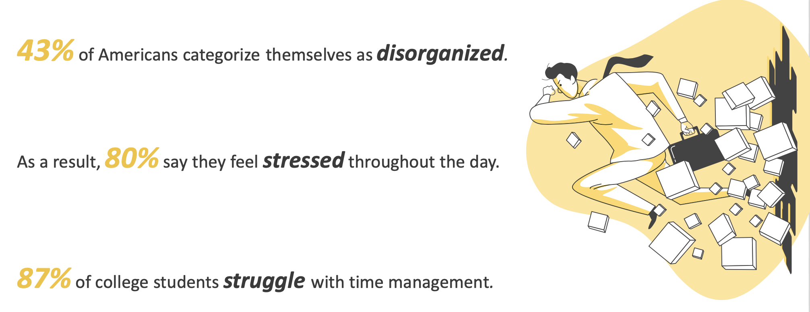
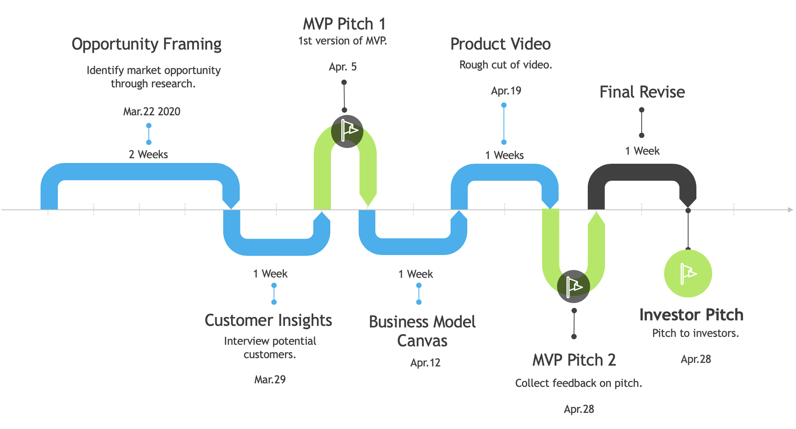
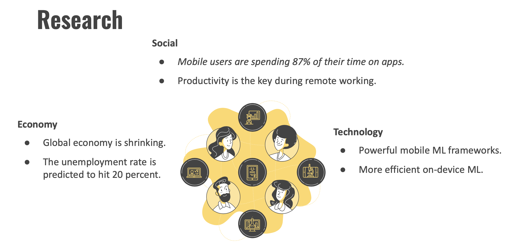
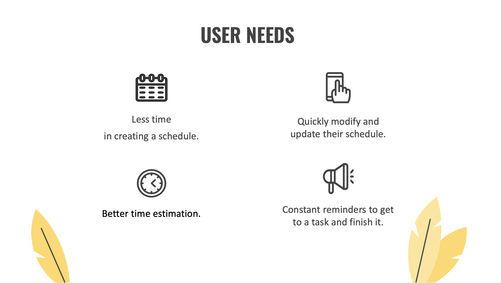
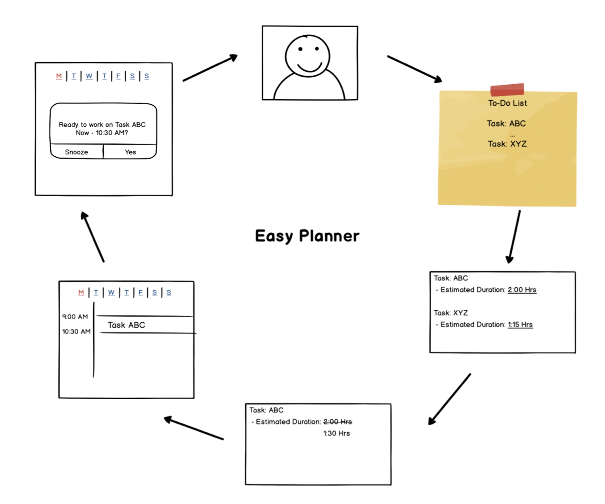

About Me
Name: Tracy Shi
Email: chuqiaos@andrew.cmu.edu
School: Carnegie Mellon University
Major: MSPM - Master of Science in Product Management
This is a portfolio that introduces a project I have done during my master's study at CMU.
Easy Planner App
Introduction
Easy Planner is an application that assists users with day planning and task time esimation using ML algorithms. We made our way from the intial idea to pitching at the Investor Showcase through the following steps:
- We started by conducting market research to identify a product opportunity.
- Then we interviewed 23 potential customers on their time management habits and preferences of digital tools.
- Next we refined our idea based on customer feedback and shaped our business model further.
- In addition, we created a video that vividly demonstrated our product idea.
- Finally, we successfully pitched our Easy Planner product at the Investor Showcase, receiving positive feedback and constructive advice.
My Role
As the leader and product manager of the project, I was responsible for scheduling meetings, leading discussions, dividing tasks based on each team member's strengths, clarifying questions with the professors, and making sure we are making good progress and reaching milestones on time.
Problem Space
The problem we focused on is Time Management. Effective time management is very important yet challenging. So we wonder, How can we help people better manage their time?

Product Roadmap
As the product manager, below is a roadmap I created that highlights the important milestones of the project.

Product Opportunity Gap
We identified a product opportunity gap through extensive background research and below is a summary.

Customer Interviews and Feedback
We interviewed a total of 23 customers with students and freelancers and collected customer needs as shown below. Next, we refined our idea based on customer feedback, giving up on virtual assistance and incorporated to-do lists as the primary input interface, and shaped our business model further to target students and freelancers.

MVP
Storyboard that illustrates our MVP.

Product Video
A video that demonstrates our product idea.